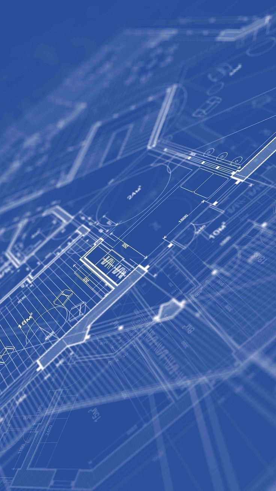
Engineering
Portfolio
Rohan Doddihal
Mechanical
Engineering
University of Exeter
University of ExeterOctober 2025 – March 2026
Tidal Energy Group Project
Project Brief:
Your engineering consultancy firm has been commissioned by a large corporate investment fund, with strong ties to renewable energy and green development, to carry out exploratory designs for an ocean energy project located in the Bristol Channel. Project may or may not be connected to an offshore working platform.
Constraints:
- A working platform must be provided that is at least 4m above the water level.
- The working platform must have a minimum area of 50m².
- The working platform must remain horizontal and largely free from wind and wave induced oscillation.
- The platform must hold its location and not drift.
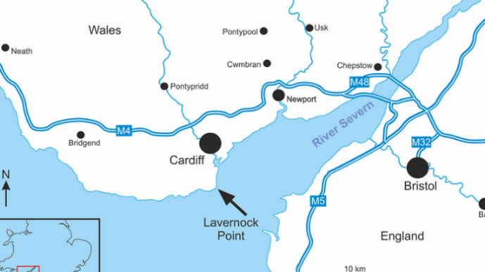 |
Location chosen – Lavernock Point:
- Wind speeds fall in the range 12-15 knots, considered calm for offshore platforms, implying there are no risks or instability associated for installation and operation.
- The optimal current speeds at Lavernock Point allow for consistent and efficient energy generation, as tidal speeds reach up to six knots.
|
Ocean Energy device – Venturi Enhanced Turbine
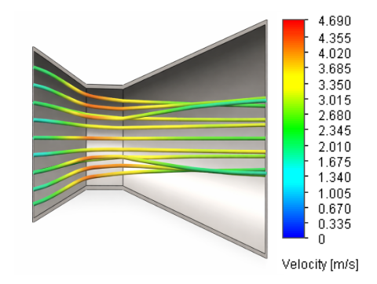 |
- Reason for choosing a Venturi device was the enhanced energy output without the need of scaling the device leading to lower costs. It also has lower environmental impact compared to other considered options.
- Our concept consists of an open-centre turbine that allows a bypass for marine life to safely pass through.
- The turbine sits near the end of throat region of the shroud, allowing it to take of the low pressure, high velocity region the shroud creates using the venturi effect.
|
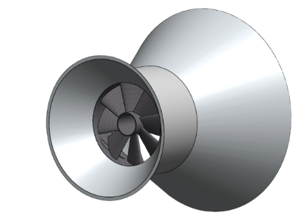 |
- Flow analysis on the shroud, using a 1.2m/s inlet velocity, achieved a 4.690m/s (x3.908 multiplier) at the throat region.
- This backs the assumption that our device could generate more power without heavily increasing scale and thus cost.
- The velocity gradient is showcased on the right.
|
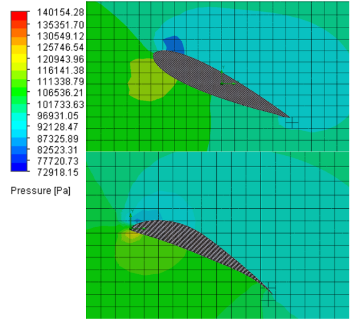 |
- The main two airfoils considered for the design of turbine blades were the NACA0012 (top) and the FX74 (bottom).
- Under the same flow conditions and angle of attack, we could see that the airfoils have very similar pressure contours.
- The NACA0012 was chosen in the end because it would be easier to manufacture due to its less extreme cambered profile.
- NACA profiles similar to this are also more widely researched and used, so information on it is more readily available.
|
Offshore Working Platform:
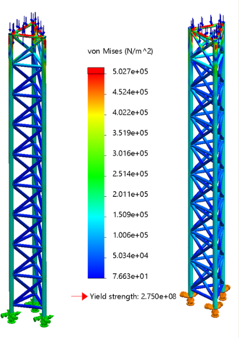 |
- The main options for our truss legs were a Z-braced (left) and an alternating X-braced truss (right).
- Triangular profile chosen as more efficient use of material and performance against horizontal forces (wind and tides).
- Through FEA tests with force of 80kN and marine-grade steel S355, both performed similarly well with the Z-braced narrowly coming out on top.
- Ultimately due to the halved number of diagonal members on the Z-braced truss, it proved more material-efficient, making it the ideal option.
|
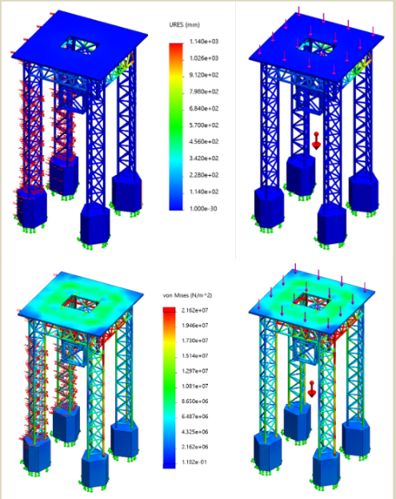 |
- The vertical forces applied on the platform were a load force of 400kN resulting in a maximum displacement of 25mm.
- In the vertical force simulation, the stress was distributed as expected, though some members experienced an uneven stress, signifying inaccuracies in the modelling.
- However, no buckling was observed, suggesting the selected truss configuration was stable and held up the platform.
|
Conclusion and Limitations:
- Overall, a successful first group project as Engineering students. Initially, our group was without much direction but as the deadlines for the first presentation approached, we became more goal-oriented and were able to produce a good result. In the end, scoring 71% on this group project was a phenomenal result that everyone was extremely proud to achieve.
- However, there were many limitations along the way, mainly the fact that there was a lack of physical tests on the venturi, and relying solely on SolidWorks simulations proves to be a significant limitation. The same can be said for the tests on the trusses, as well as the limited number of trusses ultimately tested, e.g. the fact that jacket-style or square trusses were never considered past the 'brainstorm' stage.
XRacing Formula StudentJune 2026 – 1 month
XRacing Winglet
Overview:
Design a winglet for the XRacing Formula Student car positioned above the front tyres. The goal of this project is to manage flow around the front of the car.
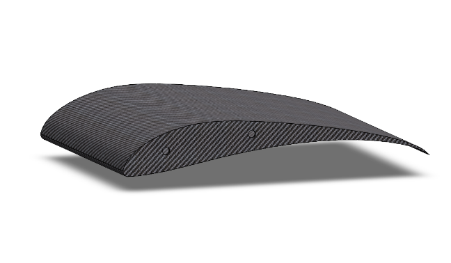 |
- Initially, I conducted research across a range of studies for airfoils in motorsport and eventually landed on the S1223 due to it being a high lift, low drag profile.
- Then I made a 1/3 scale model in SolidWorks, inputting the airfoil using the curve feature and then splining it and extruding the spline.
|
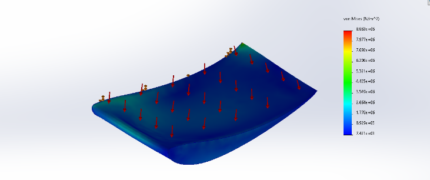 |
- Performed required load testing in accordance with FSUK 2025 regulations:
- T8.4.1: 200 N distributed over minimum 225 cm², max deflection ≤ 10 mm.
- T8.4.2: 50 N at any point in any direction, max deflection ≤ 25 mm, which it passed.
|
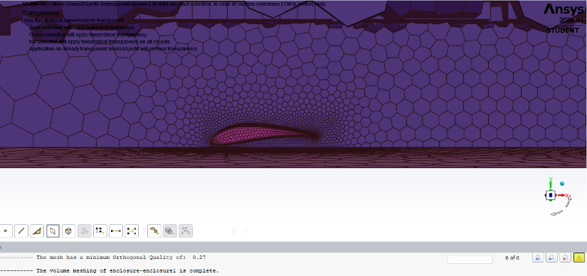 |
- Imported my file from SolidWorks into Ansys and set up the geometry using spaceclaim.
- Minimum mesh orthogonal quality was 0.120; 0.120 > 0.100 (minimum).
- Used Transition SST turbulence model: Reynolds number: 121,100
[Re =
ρVc
μ
]
c (chord l) = 0.15m
V (flow v) = 11.8 ms−1
ρ (air density) = 1.225 kgm−3
μ (dynamic viscosity of air) = 1.7894 × 10−5 Pa·s
|
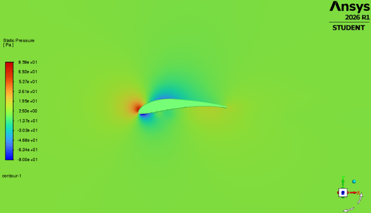 |
- Pressure contour at an angle of attack of 0°: L/D ratio of 0.66.
- Very low ratio and prominent stagnation point at leading edge.
|
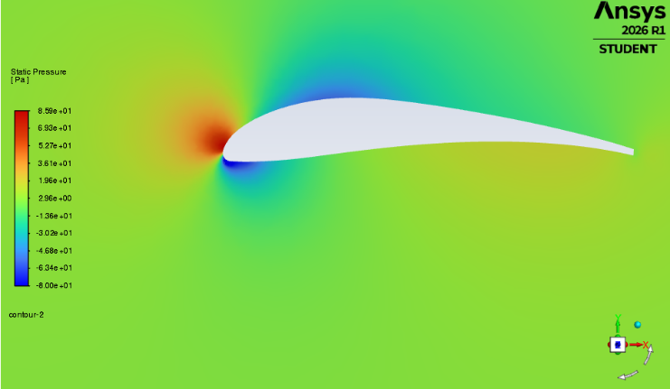 |
- After multiple attempts, with angle of 4°, L/D ratio of 2.09.
- Increasing angle more reduces L/D.
- Although, stagnation point still present.
|
Wind Tunnel Testing:
|
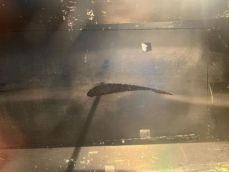
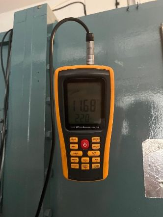
|
- 3D printed the model using Fused Direct Modelling and installed it into the wind tunnel.
- Positioned at an angle of 0° and reset the load cells to ensure the weight does not affect the readings.
- Anemometer to calculate the wind speed: 11.8m/s.
|
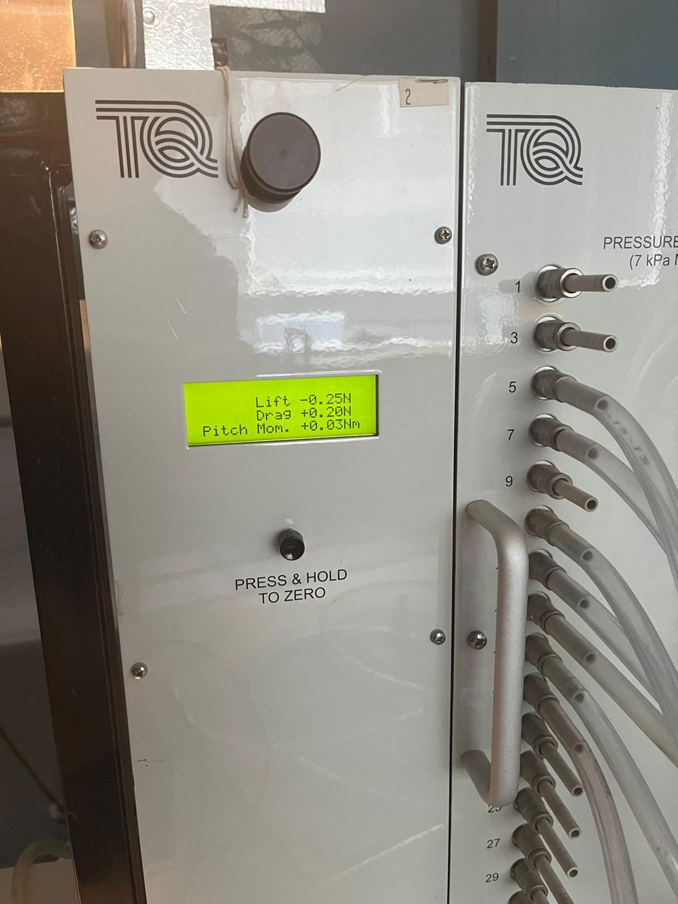 |
- At angle of attack of 0°: L/D is 1.25.
- Compared to simulation value of 0.66 – 53% correlation.
|
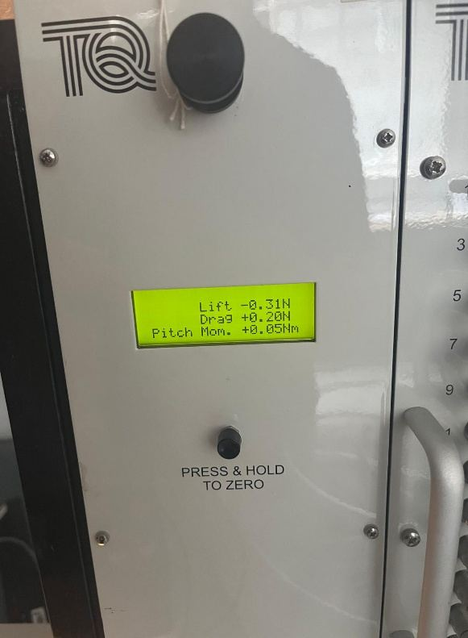 |
- At angle of attack of 4°: L/D is 1.55.
- Compared to simulation value of 2.09 – 74% correlation.
|
|
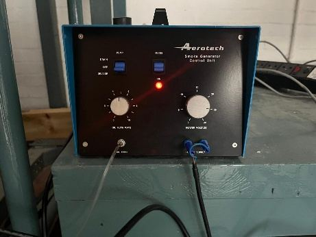
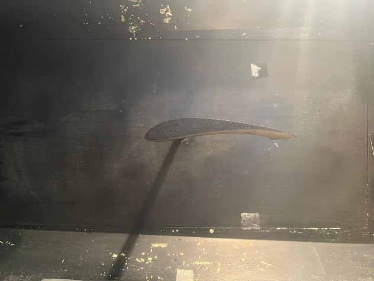
|
- Also got to use the smoke machine to better visualise the flow.
|
Conclusion:
- Overall, I achieved an average 63.5% correlation (at various angles) between the wind tunnel and simulation. This was a good experience to get into Ansys and correlating CFD against physical wind tunnel data.
- However, some things I would like to improve is the overall correlation and the way to do that is to research about y+ values and refining the boundary layer mesh to be more accurate. Other things that lead to the discrepancy is the surface roughness of the 3D model and the disturbance that came from the mounting rod, especially at lower angles as the wing's own aerodynamic forces were smaller.
PG MOT VillageAugust 2026 – 1 month
Garage Intern
1. Drop-Link Replacement
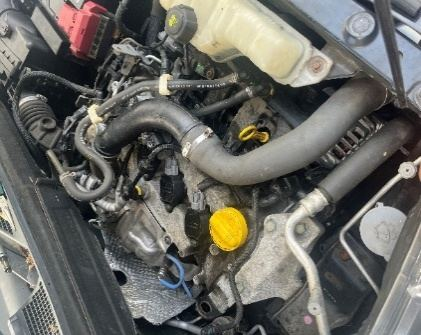
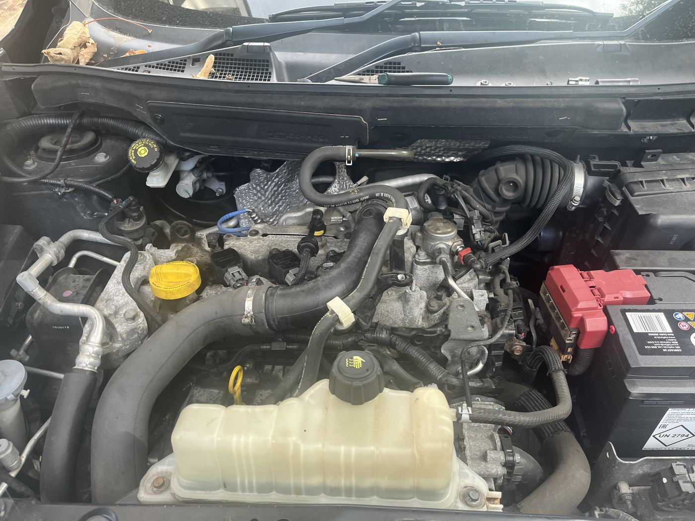
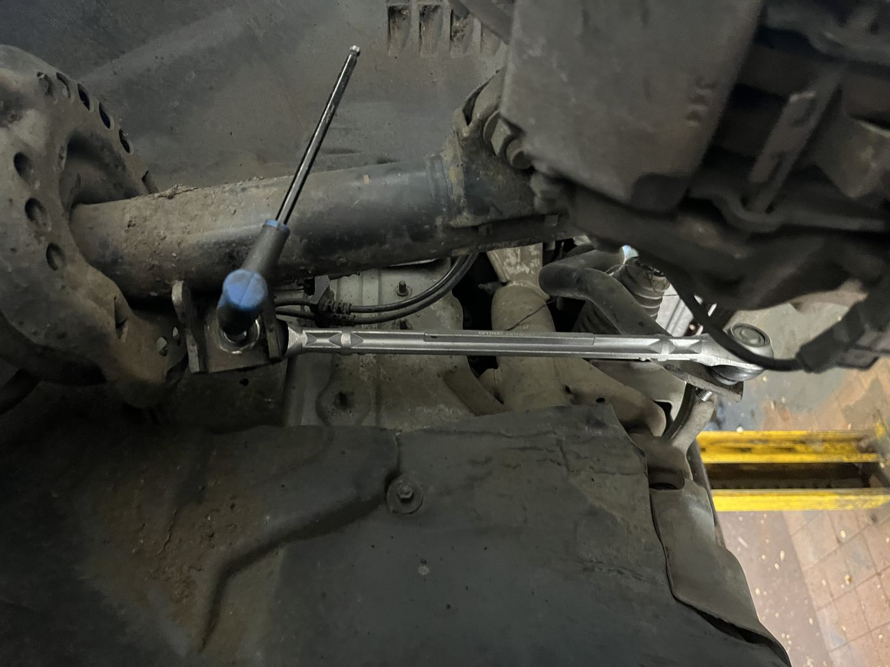
| Symptom | Diagnosis | Repair |
|---|
| Excessive play detected in the tyre when tested vertically during vehicle inspection. |
Physical inspection confirmed worn drop link with excessive articulation in the ball joint, causing instability. Drop link connects the Anti-roll bar to the suspension of the car, reducing body roll around corners. |
Removed failed drop link using impact driver and socket set. Fitted new OEM-spec drop link and torqued to specification. Retested, play eliminated. |
2. Cylinder Misfire
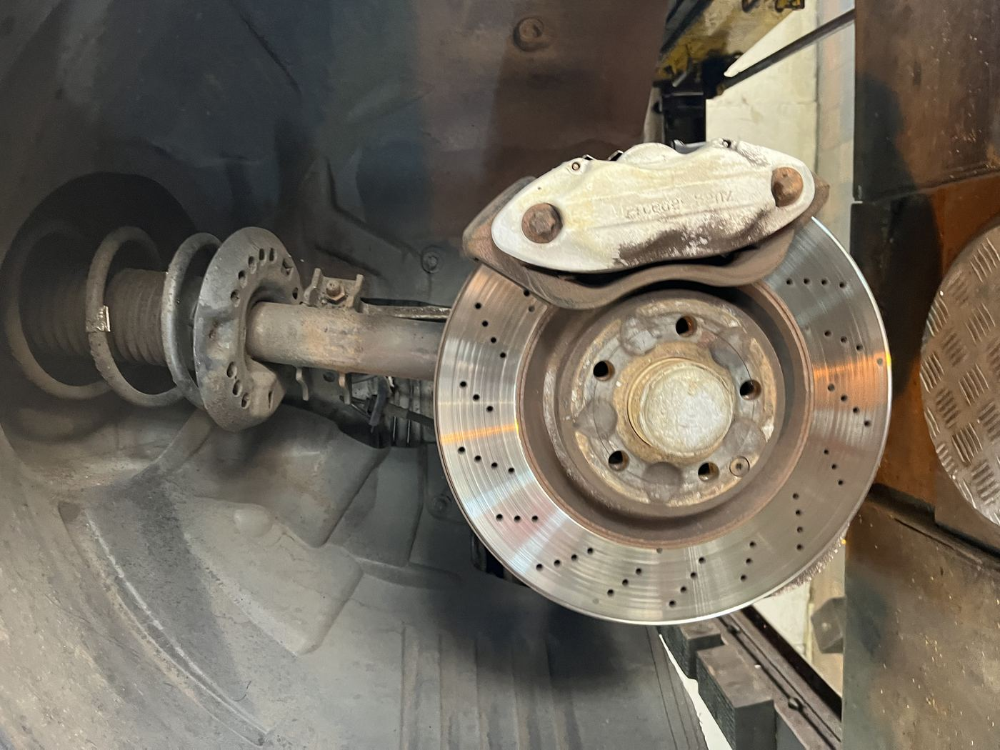
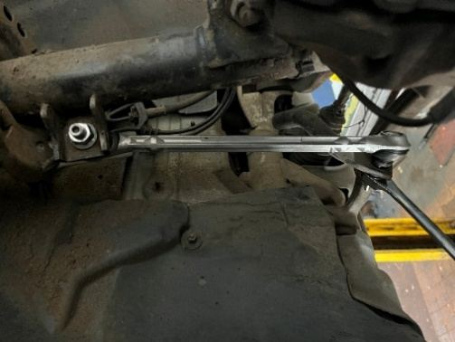
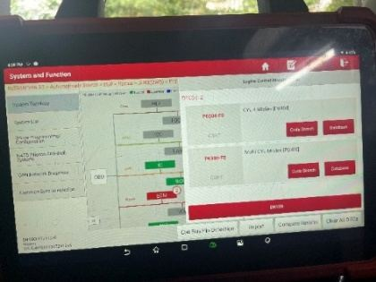
| Symptom | Diagnosis | Repair |
|---|
| Rough running reported. Problem identified through an OBD scan revealing codes, P0304 (Cylinder 4 Misfire) and P0300 (Multi-Cylinder Misfire). Both labelled as current faults on the Engine Control Module. |
1. Ignition coil – swap coils on cylinder 4 and 1 to check if it is the source of the issue. Fault remained on cylinder 4 so coil ruled out.
2. Spark plug – swap plugs on cylinder 4 and 1. Fault remains on cylinder 4, rules out plug as a source of issue.
3. Compression test on cylinder 4 |
Fault systematically isolated to cylinder 4 via component swap testing. Coil and spark plug eliminated as causes. Compression test conducted, leak in intake manifold gasket found. Demonstrates structured diagnostic process over speculative part replacement. |
3. Thermostat Housing Replacement
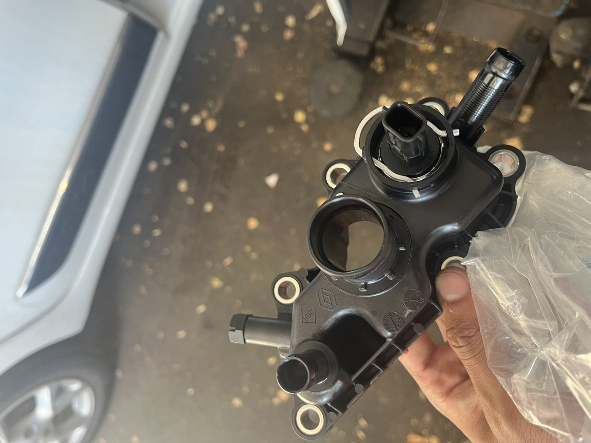
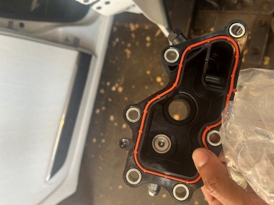
| Symptom | Diagnosis | Repair |
|---|
| Customer came in reporting overheating. |
Identified coolant leak at thermostat housing. Confirmed thermostat failure as cause of overheating — unit failing to open correctly, disrupting coolant flow. |
Drained cooling system and installed new thermostat housing with fresh gasket, refilled coolant system. |
4. Lower Suspension Arm Replacement
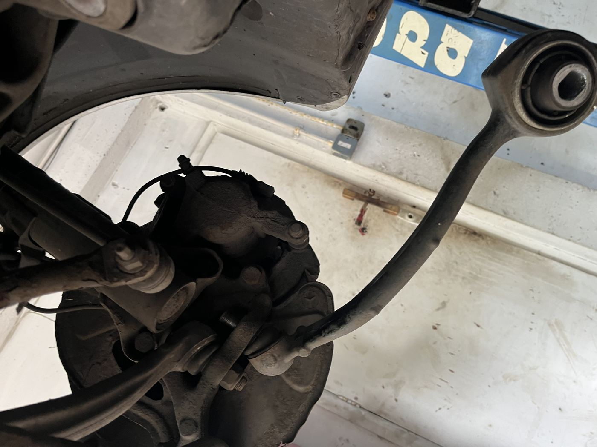
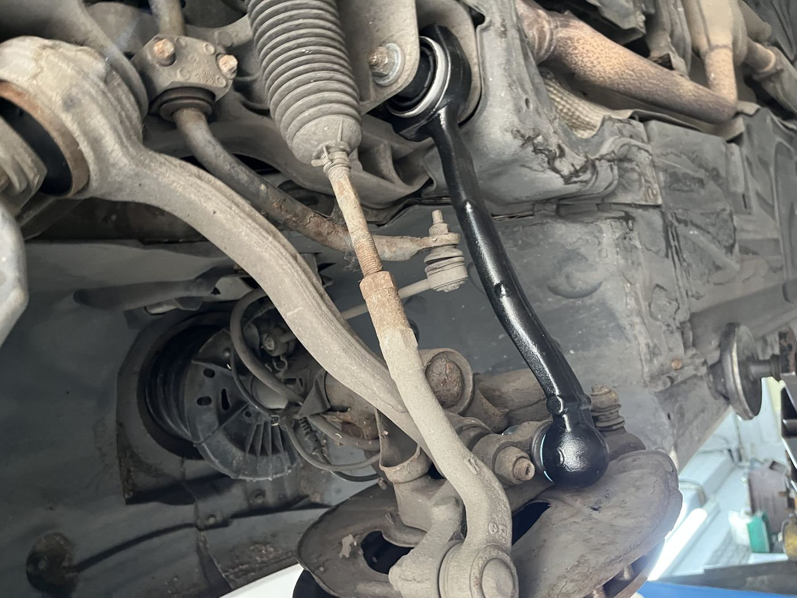
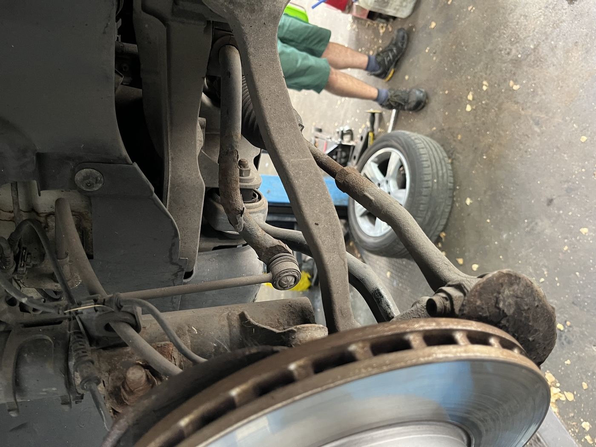
| Symptom | Diagnosis | Repair |
|---|
| Excessive play detected in the tyre when tested vertically by gripping it at 12 and 6 o clock during vehicle inspection. |
Physical inspection confirmed worn ball joint on the lower arm, causing instability. |
Removed failed lower arm using impact driver and socket set. Fitted new OEM-spec part and torqued to specification. Retested, play eliminated. |
June 2026 – 1 month
F1 Telemetry
Overview:
The goal of this project was to build a post-lap dashboard in Python that replicates the kind of data visualisation used by professional motorsport engineers at a pit wall. I wanted to extract raw telemetry data directly from the F123 game's UDP broadcast, process it, and produce a dashboard that could compare two laps and identify where time was being lost or gained.
Process:
- UDP server socket bound to localhost port 20777, matching the F1 23 default telemetry broadcast port.
- Identified what each packet type presented: packet 0 (motion data) for track map X/Z position, packet 1 (session data) for track ID, packet 2 (lap data) for lap time, sector times and lap distance, and packet 6 (car telemetry) for throttle, brake, steer, speed and gear.
- In order to compare two laps, a keyboard interrupt was received to stop the current lap's data recording and serialised to a JSON file if no reference lap existed. Then, the succeeding run was compared to that reference lap.
- To calculate the delta specifically, both laps were projected onto a common distance axis using np.interp. Then the difference between the laps was found at small increments of distance to calculate the delta.
- Six subplots were created in Matplotlib: throttle, brake, steer, speed, gear and delta. A separate axis was added for the track map (X/Z position plot) and a table axis for sector times, lap time, delta and top speed.
Conclusion:
Overall, the tool was used across 5 circuits to compare personal best laps before and after reviewing the traces, producing an average lap time improvement of 15% across the 5 circuits tested. The tool produced performance insights across multiple circuits and developed my understanding of how data acquisition, processing and visualisation connect to on-track performance. This project helped me develop skills directly relevant to performance engineering roles in motorsport.
Deans Commendation
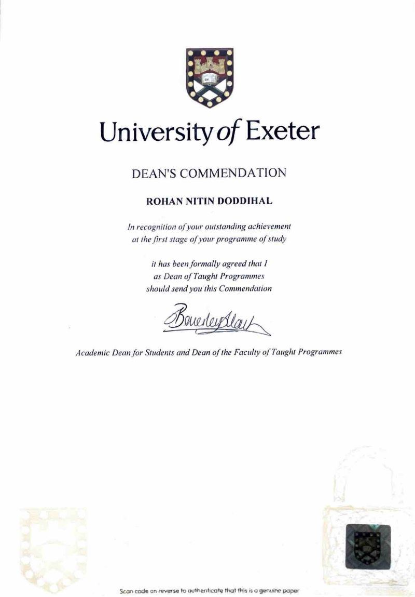